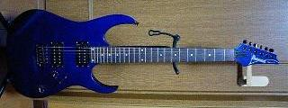
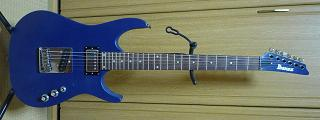

Ibanez RG（初心者用ギター）
2010年11月14日 カテゴリー：ギター関係

かなり前に姉にもらったIbanezのギターです。初心者用ギターでもともと作りはよくなかったのでいろいろ改造してみました。
下写真が改造後です。

ヘッドを少し削ってみたんですがメイプルだったようでかなり硬かったです。ペグはPLANET WAVESのロックペグに変えました。余った弦を切る機能があるのは楽ですが、ちょっと動きが硬いです。やっぱりゴトーのマグナムロックが一番かもしれません。
ボディはバスウッドの6ピースでした。ツノ部分を少し削りました。もともとシンクロナイズドトレモロがついていたんですが、ホームセンターで買った適当な木で穴埋めをして、テレキャスター用のブリッジとピックアップを取り付けています。ついでにフロントピックアップやポット等も全部変更しました。塗装も自分でやったのですが、どうしてもムラができてしまいます。まぁ遠くから見た感じはOKということにしておきます。
音はピックアップのおかげでマシになりました。改造費用はもともとの本体の価格を大きく超えてしまってますが…私がギターを始めたとき使っていたギターなのでやはり愛着があります。